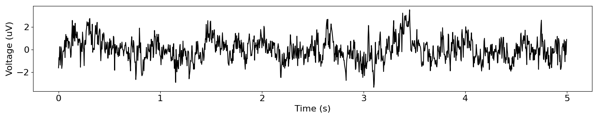
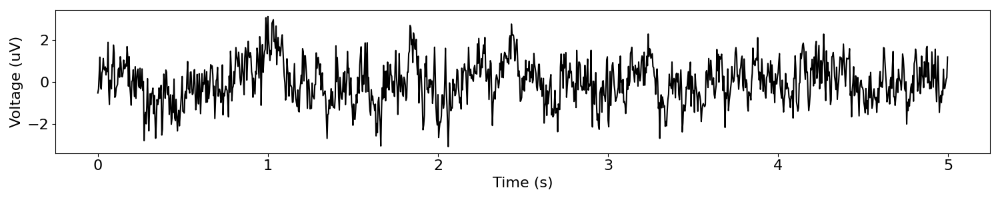
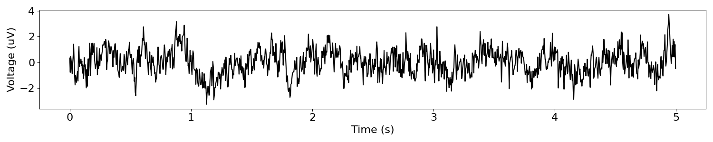
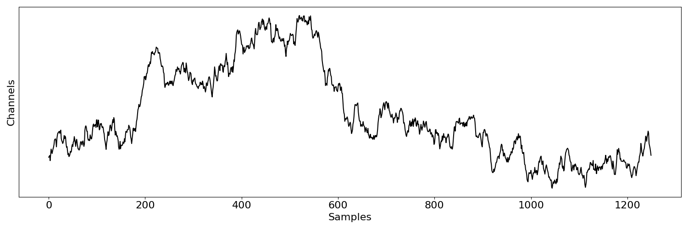
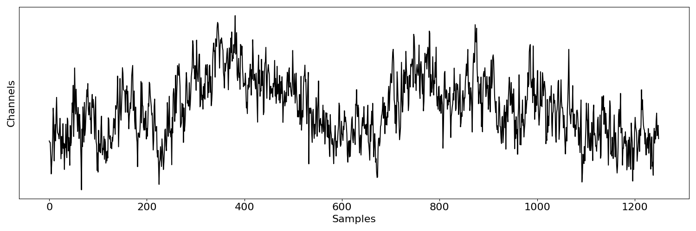
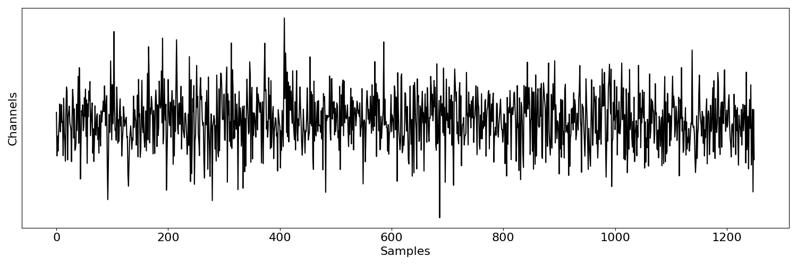

Note
Go to the end to download the full example code.
Simulating Multiple Signals¶
Simulate multiple signals together.
from neurodsp.sim.update import SigIter
from neurodsp.sim.aperiodic import sim_powerlaw
from neurodsp.sim.multi import (sim_multiple, sim_from_sampler,
sim_across_values, sim_multi_across_values)
from neurodsp.sim.update import create_updater, create_sampler, ParamSampler
from neurodsp.plts.time_series import plot_time_series, plot_multi_time_series
from neurodsp.utils.data import create_times
Simulate Multiple Signals Together¶
The sim_multiple() function can be used to simulate multiple signals
from the same set of parameters.
# Define a set of simulation parameters
params = {'n_seconds' : 5, 'fs' : 250, 'exponent' : -1, 'f_range' : [0.5, None]}
# Simulate multiple iterations from the same parameter definition
sigs = sim_multiple(sim_powerlaw, params, 3)
The output the above function is a :class:~.Simulations object that stores multiple simulated signals along with relevant metadata.
# Check the metadata stored in the simulations object
print(sigs.function, ':', sigs.params)
sim_powerlaw : {'n_seconds': 5, 'fs': 250, 'exponent': -1, 'f_range': [0.5, None]}
# Create a times definition corresponding to the simulations
times = create_times(params['n_seconds'], params['fs'])
# Plot the simulated signals
plot_multi_time_series(times, sigs)
SigIter¶
In some cases, it may be useful to define a way to sample iterations from the same set of
simulation parameters. To do so, we can use the SigIter class.
Using this class, we can define an object that stores the simulation function, the set of parameters, and optionally a number of simulations to create, and use this object to yield simulated signals.
# Initialize a SigIter object
sig_iter = SigIter(sim_powerlaw, params, 3)
# Iterate with the object to create simulations
for tsig in sig_iter:
plot_time_series(times, tsig)
- 
- 
- 
Simulate From Sampler¶
We can also use the sim_from_sampler() function to simulate signals,
sampling parameter values from a sampler definition.
# Define base set of parameters
params = {'n_seconds' : 5, 'fs' : 250, 'exponent' : None}
# Create an updater and sampler to sample from
exp_sampler = {create_updater('exponent') : create_sampler([-2, -1, 0])}
# Create a ParamSampler object
sampler = ParamSampler(params, exp_sampler)
# Simulate a set of signals from the defined sampler
sampled_sims = sim_from_sampler(sim_powerlaw, sampler, 3)
The output of the above is a :class:~.VariableSimulations object that stores simulations across variable simulation parameters, storing the simulated time series as well as the simulation parameters for each simulated signal.
# Check some of the metadata stored in the VariableSimulations object
print(sampled_sims.function)
for paramdef in sampled_sims.params:
print(paramdef)
sim_powerlaw
{'n_seconds': 5, 'fs': 250, 'exponent': 0}
{'n_seconds': 5, 'fs': 250, 'exponent': -1}
{'n_seconds': 5, 'fs': 250, 'exponent': -2}
# Plot the set of sampled simulations
plot_multi_time_series(times, sampled_sims)
Simulate Across Values¶
Sometimes we may want to simulate signals across a set defined range of parameter values.
To do so, we can use the sim_across_values() function, which takes a definition of
parameter values to simulate across.
# Define a set of parameters, stepping across exponent values
multi_params = [
{'n_seconds' : 5, 'fs' : 250, 'exponent' : -2},
{'n_seconds' : 5, 'fs' : 250, 'exponent' : -1},
{'n_seconds' : 5, 'fs' : 250, 'exponent' : -0},
]
# Simulate a set of signals
sims_across_params = sim_across_values(sim_powerlaw, multi_params)
The output of the above is a :class:~.VariableSimulations object that stores simulations across varying simulation parameters (same as with the sampled simulations).
# Plot the simulated time series from sampled parameters
plot_multi_time_series(times, sims_across_params)
Simulate Multiple Instances Across Values¶
Finally, we may want to simulate multiple instances across a set of parameter definitions.
To do so, we can use the sim_multi_across_values() function, which takes a set of
parameter definitions and a number of simulations to create per definition.
# Simulate a set of signals
n_sims = 3
sims_multi_across_params = sim_multi_across_values(sim_powerlaw, multi_params, n_sims)
The output of the above is a :class:~.MultiSimulations object that stores sets of simulations across different parameters, and relevant metadata. Each set of simulations is stored within this object as a :class:~.Simulations object.
# The length of the object is the number of parameter sets
print('# of sets of signals:', len(sims_across_params))
# of sets of signals: 3
In the above, we created a set of parameters per definition, which by default are returned in a dictionary.
# Plot the simulated signals, accessing signals from each simulation definition
plot_multi_time_series(None, sims_across_params[0])
plot_multi_time_series(None, sims_across_params[1])
plot_multi_time_series(None, sims_across_params[2])
- 
- 
- 
Total running time of the script: (0 minutes 1.316 seconds)